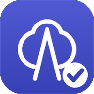

FieldSync Mobileprototype demo: concept with placeholder data Show Features and potential features ↗Earlier Collect prototype ↗The phone in the middle is the real app: nothing is lost with no signal, photos upload one record at a time, and every failure has a code and a plain fix. Pick a flow on the left to put the phone in the right place. The right side plays the web app, the PM and the network, so you can show what the crew sees when things change.